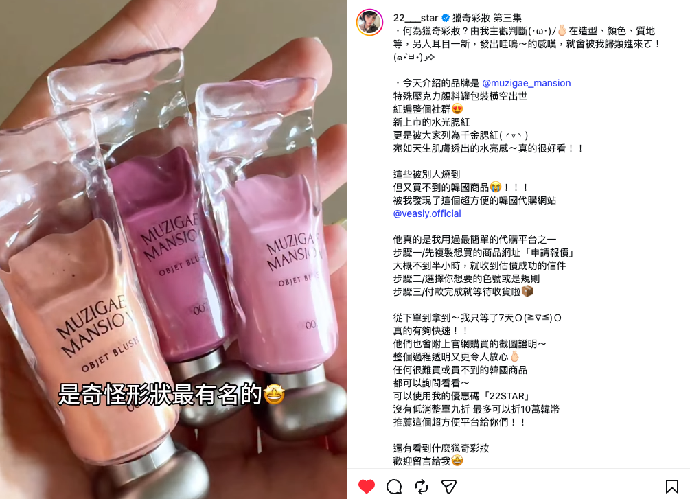
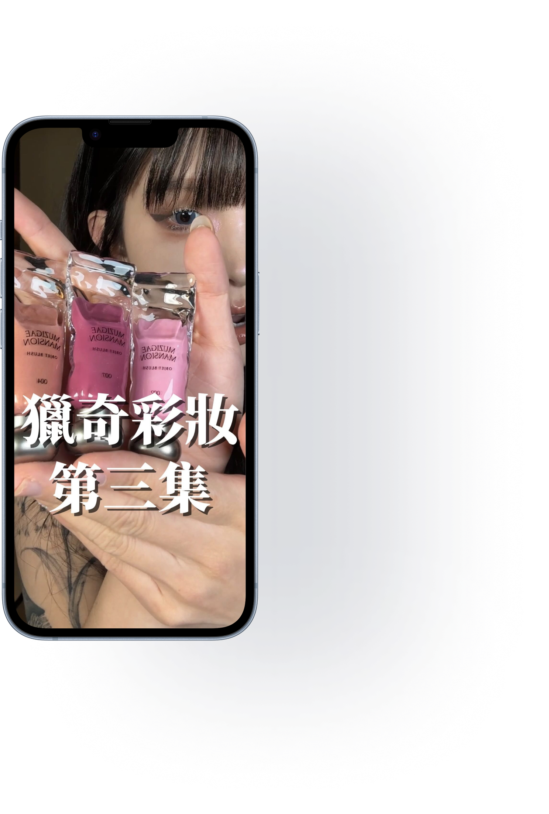

PROJECT 01 / BEAUTY / CREATOR COLLABORATION
뷰티의 매력을 현지의 언어로
Muzigae Mansion · VEASLY

제품의 매력과 구매 정보를 함께 전달하기
한국 상품을 대만 고객에게 소개하는 VEASLY에서 뷰티 크리에이터 협업을 진행했습니다. 이 사례는 Muzigae Mansion의 색조 제품을 사용하고 구매 경험을 소개한 콘텐츠입니다.
게시물은 한국 상품을 구매하기 어려운 상황과 구매 과정에 대한 정보를 함께 다룹니다. 제품의 매력과 서비스 사용 방법을 대만 소비자가 이해할 수 있게 연결하는 것이 핵심입니다.
판단의 근거를 더하다
[내용 추가 필요] 어떤 소비자 반응을 근거로 이 크리에이터와 메시지를 선택했는지에 대한 판단 기록이 필요합니다. 결과물에서는 제품 리뷰와 구매 과정에 대한 정보가 함께 확인됩니다.
리뷰와 구매 경험을 연결하는 방향
[내용 추가 필요] 제품 사용 경험과 구매 안내를 연결하는 방향이 결과물에 드러납니다. 실제로 검토한 대안과 메시지 우선순위를 추가해주세요.
가이드부터 게시까지 협업 운영
대만 인플루언서 협업에서 섭외·조건 협의, 촬영 가이드 작성, 대본·영상·문구 검수, 일정 조율, 게시·정산까지 운영했습니다. 이 사례에서 직접 작성한 가이드와 세부 기여 범위는 [내용 추가 필요].
협업 결과물은 색상과 발색을 직접 보여주는 사용 장면에 구매 절차, 배송 경험, 할인코드를 연결합니다. 크리에이터의 제품 리뷰 형식 안에 서비스 정보를 담았습니다.
콘텐츠에 남은 반응
제공된 캡처에서 조회수 약 146만 회, 좋아요 약 1.2만 개, 댓글 29개를 확인했습니다. 주문·매출 및 협업 비용은 [내용 추가 필요].
